AI Academy · Level 4 · Grade 9 · Week 1 · Student lesson
The ML Lifecycle
Learn to understand, design, build, test and explain AI systems responsibly.
Project: Responsible Plant Classifier
Before you start
AI-2 Week 11: training, selection and final evaluation use different evidence.
Plan time to read, investigate and explain. Keep predictions separate from observations.
Student lesson · 1 of 17
Your mission
Your learning target
I can distinguish fitting a rule from applying a fixed rule.
I can trace a small learning lifecycle with separate data.
I can report test evidence with its limits.
Remember before reading
Close your notes first. A rough first answer helps us choose the right starting point; it is not a score for your ability.
Without opening the old lesson, explain one key idea from Creator Defense. Give an example and a mistake that the idea helps you avoid.
After trying, check the relevant lesson or ask your teacher. Change the part of your explanation that the evidence shows was wrong.
Machine learning is an evidence cycle: define a prediction problem, prepare examples, fit a model, evaluate on unseen data, and improve one diagnosed cause.
Builder name and experiment date:
Readiness for the connected explanation
A fixed rule matches 3 labels out of 4 tested cases. What fraction is correct, and does that prove it works on all future cases?
This week’s end goal
By the end, I can explain the ml lifecycle using a traced example and a stated limitation.
Student lesson · 2 of 17
Notice the evidence
PICTURE ENTRY
Notice → Predict → Explain
Begin with visible evidence; do not explain more than the picture and information support.
Name three visible details without interpreting them.
Predict the data, model, or evaluation decision being made.
Identify one hidden assumption that could change the result.
State what evidence would confirm or reject your prediction.
My prediction and supporting evidence:
A closer explanation
In Grade 7 you programmed an activity chooser using a rule supplied by a person. This week you will choose a rule by comparing its predictions with labelled examples. This small supervised learning task makes the learning process visible: people define the task and possible rules; training data determines which candidate fits best.
Imagine fictional practice cards with a measured width x and a category label, 0 or 1. Width uses invented units. We want to predict the category of another card from its width. The labels are provided observations in this exercise, not values generated by our prediction code. These invented cards demonstrate a method; they provide no evidence about real objects or students.
| Purpose | Width x | Observed label |
|---|---|---|
| Training | 1 | 0 |
| Training | 3 | 0 |
| Training | 5 | 1 |
| Training | 7 | 1 |
| Held out for later testing | 2 | 0 |
| Held out for later testing | 6 | 1 |
Before fitting, set aside the final two cards. They are visible here so you can follow the complete example, but do not use them to choose a rule. Our candidates predict 1 when width is at least 2, 4 or 6, and 0 otherwise. Choose the candidate with the fewest training mistakes. If candidates tie, choose the smaller threshold; fix this rule before testing.
Student lesson · 3 of 17
See how it works
ML MECHANISM
Input → Model → Evidence
Trace the information, fitted behavior, and evaluation proof separately.
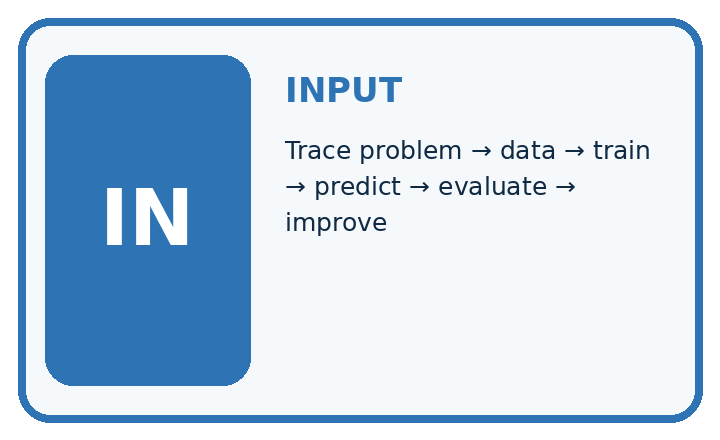
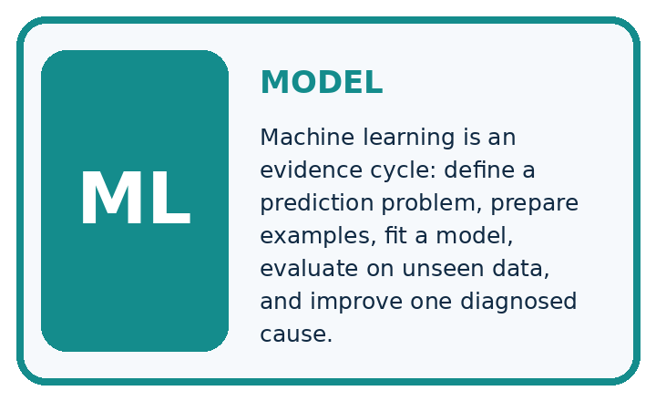
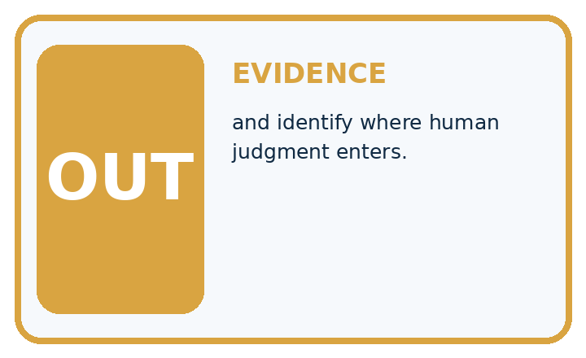
QUESTION Trace problem → data → train → predict → evaluate → improve, and identify where human judgment enters.
MODEL IDEA Machine learning is an evidence cycle: define a prediction problem, prepare examples, fit a model, evaluate on unseen data, and improve one diagnosed cause.
PROOF NEEDED Use an unseen case, visible calculation, error analysis, and a stated limitation.
Draw a fresh data → model → prediction → evaluation trace:
A closer explanation
train = [(1, 0), (3, 0), (5, 1), (7, 1)]
# Predict 1 when x is at least the threshold; otherwise 0.
def predict(x, threshold):
return int(x >= threshold)
for threshold in [2, 4, 6]:
errors = 0
for x, label in train:
if predict(x, threshold) != label:
errors = errors + 1
print(threshold, errors)int(True) is 1 and int(False) is 0. For threshold 2, the training predictions are 0, 1, 1, 1: the width 3 card is wrong. For threshold 4, they are 0, 0, 1, 1: none is wrong. For threshold 6, they are 0, 0, 0, 1: the width 5 card is wrong. The printed rows are 2 1, then 4 0, then 6 1. Select threshold 4 using this training evidence and record it. The loop reports errors; the learner makes and records the selection.
Keep fitting and testing separate
Connect the picture and the explanation
Point to the input, the deciding step and the result in this week’s visual. Explain the same step in ordinary words. A picture helps when you can say what each part represents.
Student lesson · 4 of 17
Compare the cases
EVALUATION DESIGN
Four Tests, Four Kinds of Evidence
A system is not understood until it survives more than one comfortable example.


NORMAL Expected data and expected behavior.
BOUNDARY Value close to a threshold, ambiguous label, or uncertain prediction.
MISSING Necessary field, label, source, or measurement is unavailable.
SHIFTED New lighting, species, device, subgroup, or time condition.
Which case most threatens today's claim, and why?
Change one thing in the pictured case
Change: The fresh width-6 leaf is actually healthy.
Prediction: The frozen model is correct on 1/2 test leaves.
Reason: The supplied reference changed; moving the cutoff after seeing this test would reuse final evidence for development.
Student lesson · 5 of 17
Words that unlock the idea
VOCABULARY
Words You Can Calculate and Defend
A definition matters when it lets you interpret a new dataset, model, or result.
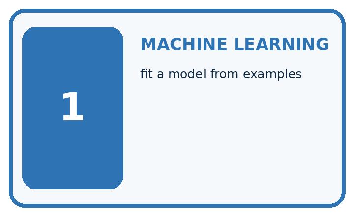
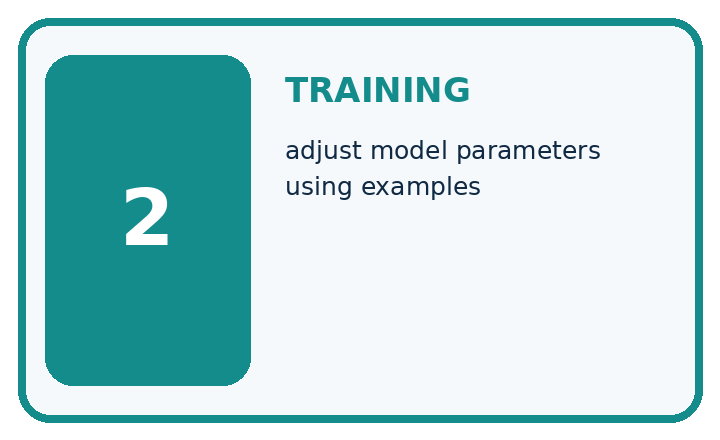
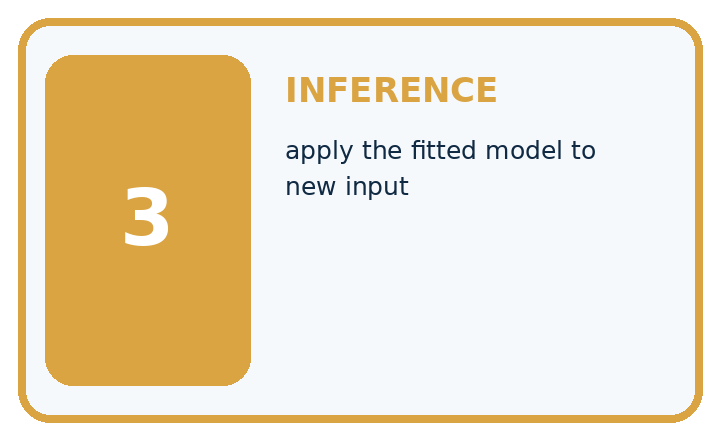
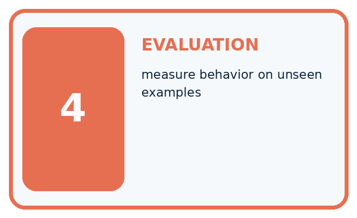
| Term | Precise meaning | My ML example |
|---|---|---|
| machine learning | fit a model from examples | |
| training | adjust model parameters using examples | |
| inference | apply the fitted model to new input | |
| evaluation | measure behavior on unseen examples |
Repair the claim using a definition, calculation, or test record:
Words used in the closer explanation
| Word | Meaning |
|---|---|
| Feature | An input value used to make a prediction |
| Label | An observed target value supplied for an example |
| Training | Using examples to select or adjust a model |
| Held out data | Examples reserved from fitting and model choices for evaluation |
Student lesson · 6 of 17
Follow a worked example
WORKED EVIDENCE
Reason Step by Step
Predict first. Then check each step. A correct answer without visible evidence cannot be audited.
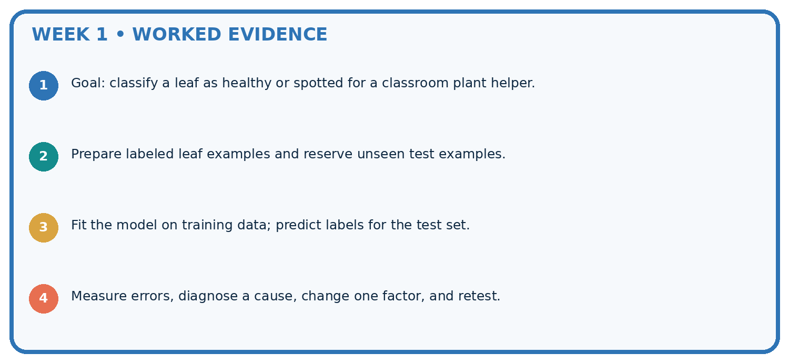
STEP 1 Goal: classify a leaf as healthy or spotted for a classroom plant helper.
STEP 2 Prepare labeled leaf examples and reserve unseen test examples.
STEP 3 Fit the model on training data; predict labels for the test set.
STEP 4 Measure errors, diagnose a cause, change one factor, and retest.
Recalculate, retrace, or restate the evidence independently:
A closer explanation
Freeze means do not change the chosen threshold during this evaluation. With threshold 4, widths 2 and 6 receive predictions 0 and 1. Compare them with the held out labels: both match. Report 2 correct out of 2 held out cards. Training results and test results answer different questions: did the rule fit the examples used to select it, and how did that fixed rule perform on these separate examples?
Learn from the worked case
Cover the result before checking it. Say what is given, choose the procedure, and follow one step at a time. Then uncover the result and explain your first mismatch. Ask why a step is allowed, not only what number it produces.
A pictorial worked case: The ML Lifecycle
Follow one complete plant-classifier lifecycle without tuning on the final test.
The facts we will use
Toy training leaves have widths 1 healthy, 3 healthy, 5 spotted, 7 spotted. Candidates predict spotted at width>=2 or >=4.
All inputs and outcomes in this worked example are invented classroom data; no real model run is claimed.
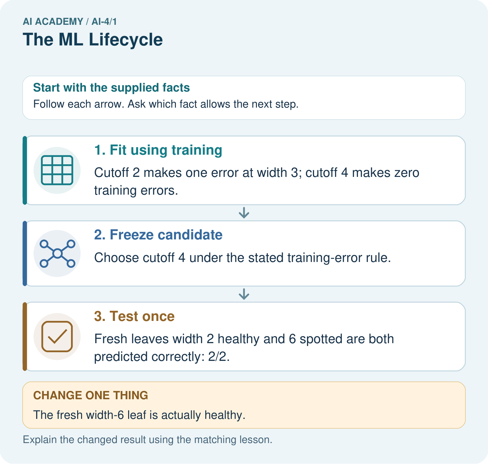
Read the picture one step at a time
Why this result follows
Read the picture in order. Fresh leaves width 2 healthy and 6 spotted are both predicted correctly: 2/2. The arrows show which recorded input or intermediate result each decision uses. Explain the deciding step aloud before checking the changed case; pointing to the final answer alone does not show how it follows.
What this example does not establish
Two invented test leaves cannot establish useful real-world plant classification.
Read the labelled picture: Should the team silently retune on the changed test? Point to the relevant step in the picture, then write the changed result and the rule or evidence that supports it.
Change one thing: The fresh width-6 leaf is actually healthy. Predict the result before checking the explanation. What remains the same?
Student lesson · 7 of 17
Find and repair a mistake
ERROR DETECTIVE
Compare → Diagnose → Repair
Do not patch the answer. Find the earliest unsupported assumption, data problem, or experiment error.
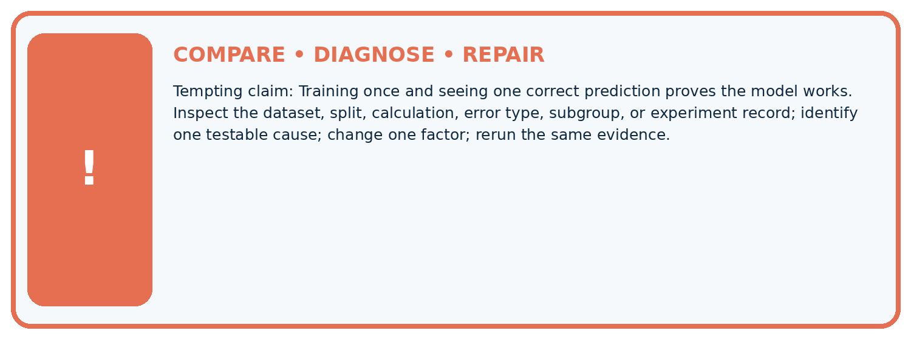
| Evidence record | Expected | Actual | Likely cause / next test |
|---|---|---|---|
| normal case | passes | ||
| boundary case | defined behavior | ||
| missing case | safe fallback | ||
| shifted case | measured limit |
Diagnose one cause and name the cleanest next experiment:
A closer explanation
This threshold model learned only a choice among three candidate values. People supplied the feature, labels, candidate family and tie rule. Learning does not imply understanding, and perfect training performance does not guarantee good predictions. Two correct test cards are too few to establish reliable performance for a broader population. Even a larger score would depend on how examples were collected and what use was intended.
Student lesson · 8 of 17
Practise together
ML STUDIO
Specify Before You Run
A trustworthy result can be reproduced from the recorded data, code, settings, and evaluation rule.

Experiment record
QUESTION + intended use + success threshold
DATA version + grouped split + leakage check
CODE/preprocessing + features + model + settings + seed
METRICS + positive class + units + denominators
PREDICTIONS + errors + subgroup slices + limitations
HUMAN reviewer + release, revise, limit, or stop decision
Write the minimum record needed to reproduce today's result:
A closer explanation
A learner sees the width 4 test error, changes the threshold to 5, and reports the same cards as a fresh final test. The test labels have now influenced the model. Keep the original 2 of 3 result for the original rule. Record the change as development, then reserve genuinely unused examples for a later evaluation. Do not delete the difficult card or rename reused cards as new evidence.
A lifecycle continues after fitting: define the intended use, prepare and separate data, fit, evaluate, review the limits, and monitor any approved use. Evaluation can send us back to development. That return needs an honest record and a new final evaluation; it does not erase the earlier error.
Practise with less help: Trace one candidate
Use workbook W2 for the connected example “The machine learning lifecycle”. First fill the input and rule boxes. Try the middle steps before asking for a hint. After a hint, try the next step yourself.
| Plan | Do | Check |
|---|---|---|
| What is given? Which rule or procedure applies? | Record each intermediate step. | Does the result follow? What remains unknown? |
Explain your trace to a partner. Your partner points to one step to check. Swap roles on the next case. Each person writes their own explanation.
Check your reasoning
Use the worked case for The machine learning lifecycle. Proposed explanation: “The model wrote its own task”. Decide whether this explanation is supported. Point to the step or supplied fact that decides; explain your repair if needed.
Answer on your own before discussion. If you are unsure, say which step you need help with.
Explain the picture
Should the team silently retune on the changed test? Point to the relevant step in the picture, then write the changed result and the rule or evidence that supports it.
This is supported practice. Keep the separately named independent case for an attempt before feedback.
Student lesson · 9 of 17
Run the investigation
EVIDENCE LAB
Predict → Run → Calculate → Interpret
Keep the test conditions fixed, record every result, and change only one planned factor.
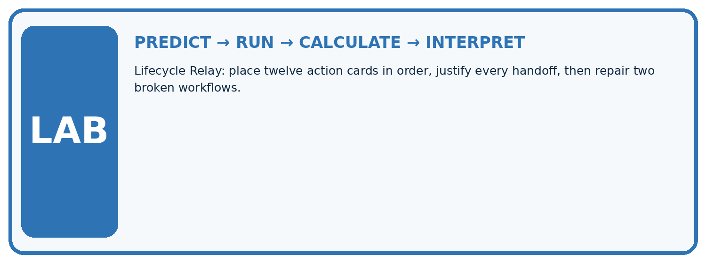
1. Write the hypothesis and expected evidence before running.
2. Lifecycle Relay: place twelve action cards in order, justify every handoff, then repair two broken workflows.
3. Run one normal, one boundary, one missing, and one shifted case.
4. Calculate the metric from raw counts or row-level errors.
5. Interpret what changed, what did not, and what remains unsafe or unknown.
| Case | Prediction | Actual | Calculation / evidence | Meaning / next test |
|---|---|---|---|---|
| Normal | ||||
| Boundary | ||||
| Missing | ||||
| Shifted |
Plan → try → check
Before trying: what do I expect, and why? While trying: which step could first go wrong? Afterwards: what did I actually observe, and what should change? Keep “not run” if you only traced the procedure.
Student lesson · 10 of 17
Build your understanding
MASTERY
From Knowing the Word to Owning the Idea
Move upward only when you can produce evidence without copying the example.

DEFINE Use all four terms precisely: machine learning, training, inference, evaluation.
CALCULATE Reproduce the worked evidence with units and denominator.
TRACE Explain the data, code or decision path.
DIAGNOSE Training once and seeing one correct prediction proves the model works.
TRANSFER Solve a fresh dataset or model case.
IMPROVE Change one cause and rerun fixed evidence.
DEFEND State intended use, metric, limitation, and human responsibility.
Student lesson · 11 of 17
Connect your project
CUMULATIVE PROJECT
Responsible Plant Classifier
Every week adds one reviewable artifact to the same evidence-based capstone.
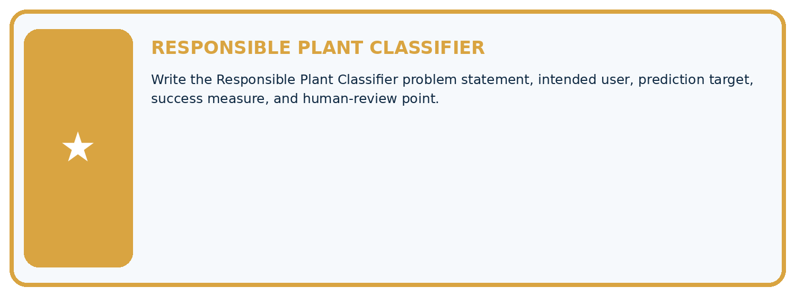
Which requirement or risk does this artifact address?
Which dataset, split, code, and metric version does it use?
What normal and shifted cases were tested?
What remains uncertain or weak?
What decision still belongs to a teacher or qualified human?
My evidence-linked project decision:
Evidence for your project
For your Responsible Plant Classifier, save the input, procedure, observed result and limitation of this check. Label this worked example as practice; use a different, previously unreviewed case when checking independent understanding.
Student lesson · 12 of 17
Show what you know
INDEPENDENT PROOF
Explain • Calculate • Transfer • Defend
Complete this with a fresh case after guided practice and compare it with the mastery criteria.
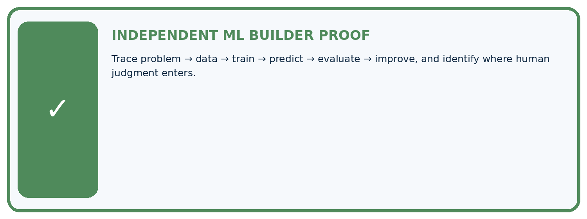
□ Define the task, feature/target roles, and intended-use boundary.
□ Show the calculation, code trace, or experiment record.
□ Test a normal case and one revealing boundary, missing, or shifted case.
□ Diagnose one failure without changing several factors at once.
□ Name a limitation, fairness concern, and the human-review action.
Independent evidence and defense:
My level: □ Not yet □ With one hint □ Independently □ I can teach and defend it
Student lesson · 13 of 17
Study a complete case
Week 1 Worked case
Use the supplied details to practise the weekly concept before attempting the independent question. This case extends the illustrated lesson.
The situation
A team labels leaf photos, trains a healthy/spotted classifier and shows one correct prediction.
The question
Order the lifecycle and identify missing evidence.
Worked explanation
Define use and labels, collect data, separate evaluation data, train, predict, evaluate and improve. One correct result is insufficient. Test unseen varied cases and retain human responsibility.
Explain it in your own words
Which detail supports the answer, and why does it matter?
Trace the supplied case visually
Evidence drives the ML lifecycle
| Evidence or stage | Value or result |
|---|---|
| Define | Intended use and labels |
| Prepare | Collect and separate evaluation data |
| Train | Fit on training data |
| Evaluate | Inspect unseen results |
| Revise | Change a cause and retest |
A team labels leaf photos, trains a healthy/spotted classifier and shows one correct prediction.
Order the lifecycle and identify missing evidence.
Define use and labels, collect data, separate evaluation data, train, predict, evaluate and improve. One correct result is insufficient. Test unseen varied cases and retain human responsibility.
Student lesson · 14 of 17
Try a new case independently
Independent case: Fit and evaluate independently
New training cards are (width 2, label 0), (4, 0), (6, 1), (8, 1). Candidates are 3, 5 and 7. Predict 1 when width is at least the threshold. Count training mistakes, select the fewest with smaller threshold breaking ties, and record the choice before testing. Held out cards are (3, 0), (7, 1), (5, 0). Give each test prediction, the correct count and a limited conclusion.
Attempt this case before feedback. Record any help. Earlier examples below are further practice; a case already practised with feedback cannot establish fresh transfer.
Week 1 Independent application
Close the worked explanation. Apply the idea to this different question without copying.
A team selects a model before deciding what outcome to predict or where the data comes from. Name two missing lifecycle decisions and their effect.
My answer, with a trace, calculation or supporting evidence
Create and test
Change one relevant detail. Predict the result before testing. Include a boundary or missing-information case when it helps reveal a limit.
My changed input and expected result
Connect to your project
Write the Responsible Plant Classifier problem statement, intended user, prediction target, success measure, and human-review point.
The evidence I will keep
Your teacher has the independent answer and scoring criteria. Complete the matching workbook week to keep your practice evidence together.
Transfer practice from the original programme
A team labels photos, fits a model and celebrates one correct new photo. List the missing evaluation steps and define the intended use before testing.
Use feedback to improve
Attempt the independent case before hints. Record whether you worked alone, used a hint or followed a model. After feedback, fix the first unsupported step and explain why it changed. A later check uses a changed case, not a copied answer.
Student lesson · 15 of 17
Your lesson route
Start with this question: Follow one complete plant-classifier lifecycle without tuning on the final test.
| By the end, I can | How I will show it |
|---|---|
| Distinguish fitting a rule from applying a fixed rule | Explain the deciding step, show a trace or test, and state one limit. |
| Trace a small learning lifecycle with separate data | Explain the deciding step, show a trace or test, and state one limit. |
| Report test evidence with its limits | Explain the deciding step, show a trace or test, and state one limit. |
Remember → watch and explain → try with help → investigate → try independently → keep project evidence. Your teacher may spread this lesson across several classes.
Keep your first prediction. Compare it with what the evidence shows and explain any change.
Student lesson · 16 of 17
Finish and return
Close your notes. Explain this goal in your own words: Distinguish fitting a rule from applying a fixed rule
If you are unsure, return to the worked picture and explain one arrow. If you are ready, change an input or assumption and justify your prediction.
Save your workbook evidence. At the next review, try a different case before opening your old answer.
Student lesson · 17 of 17
Supported practice, repair and portfolio
Use this supported practice once, in the browser or on paper. Keep the reserved independent assessment for a separate first attempt before teacher feedback.
Follow one complete plant-classifier lifecycle without tuning on the final test.
Practice 1: explain the deciding evidence
Which labelled step matches this detail? Fresh leaves width 2 healthy and 6 spotted are both predicted correctly: 2/2.
1. Test once
2. Freeze candidate
3. Fit using training
Hint if needed: Read the steps in the pictorial case. Match the supplied detail to the stage that performs or records it.
After your attempt, compare with the supported explanation: Test once Fresh leaves width 2 healthy and 6 spotted are both predicted correctly: 2/2. Read the picture in order. Fresh leaves width 2 healthy and 6 spotted are both predicted correctly: 2/2. The arrows show which recorded input or intermediate result each decision uses. Explain the deciding step aloud before checking the changed case; pointing to the final answer alone does not show how it follows.
Practice 2: explain the deciding evidence
Changed-case practice: The fresh width-6 leaf is actually healthy. Which conclusion is supported by the supplied facts?
1. We can decide the result without examining the changed input or the procedure.
2. This one example guarantees correct results for every future input.
3. The frozen model is correct on 1/2 test leaves.
Hint if needed: Use the changed condition and the deciding step in the pictorial trace. The answer must say what follows from those facts.
After your attempt, compare with the supported explanation: The frozen model is correct on 1/2 test leaves. The supplied reference changed; moving the cutoff after seeing this test would reuse final evidence for development.
Repair a missing building block
Review Creator Defense (ai-3/36). Goal: Explain the mechanism and terminology of generative systems defense. Short practice: Which numbers would you display to make the defense honest? Point to the relevant step in the picture, then write the changed result and the rule or evidence that supports it.. Return to this week and explain what you changed.
Predict, run and debug
The browser lab lets you edit the supported Python examples already included in this lesson. Predict first, run, inspect the actual output or error, change one input, then run again. Keep code, predictions, actual results and a reasoned revision together. On paper, label your result as a trace rather than an execution.
Keep your completed work
Use Download completed work in the hosted lesson to export your answers, reflections, practice feedback and code-run evidence. Open the HTML copy to read or print it. Drafts stay in this browser when storage is available; clear drafts on a shared device.